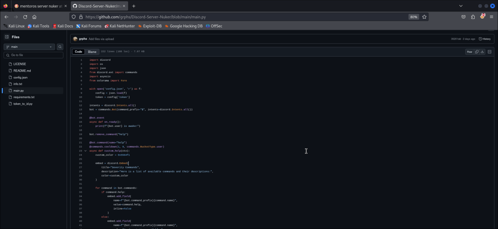

Discord sever nuker
La fuente original del script fue eliminada, a nombre del usuario "Mentoro" en github.
Aun se pueden encontrar copias del mismo como por ejemplo la siguiente:
Si visualizamos la herramienta encontramos su uso principal en el que destaca varios comandos para afectar al
uso y funcionamiento de servidores en discord.
Si abrimos el archivo en github y miramos el codigo aparentemente no veremos nada grave.

Sencillamente vamos a ver su codigo y el supuesto funcionamiento pero si somos un poco asertivos a la hora de
verificarlo veremos que hay algo extraño en él.
Para verlo más facilmente vamos a mostrar el código en raw.

Aquí vemos como en las primeras lineas algo ha cambiado y es que en raw se eliminan ciertos espacios
innecesarios en el código y los ajusta a la pantalla.
Esto permite ver como se había "ocultado" este malware en el código que simplemente es indexandolo con gran
cantidad de espacios al final de las primeras líneas.
En el siguiente punto voy a copiar el código tal cual esta en github por si este es eliminado para que se vea
con total claridad.